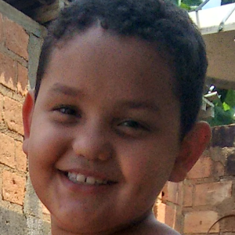

Mais sobre mim
Olá, eu sou o Francysco Vinicius Garcia Silva, tenho 16 anos e ainda sou bv. Gosto muito de jogar no celular e assistir pôrno. Quando crescer quero ser um veterinário, mas não gosto de estudar.
Coisas que eu gosto
- Jogar no celular
- Assistir porno
- Comer
- Dormir
- Jogar vôlei